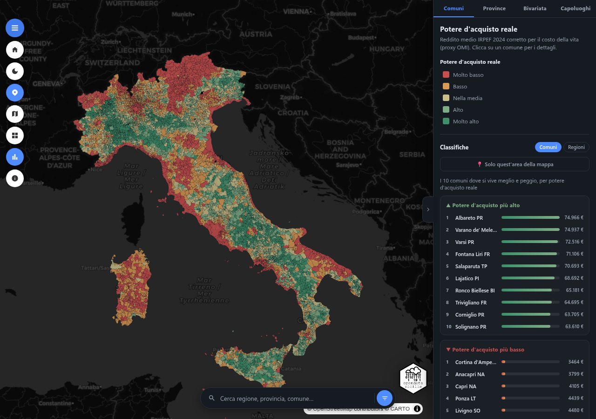
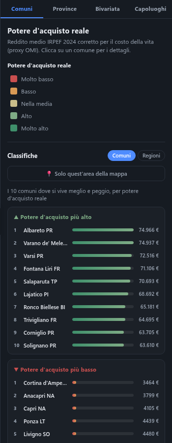
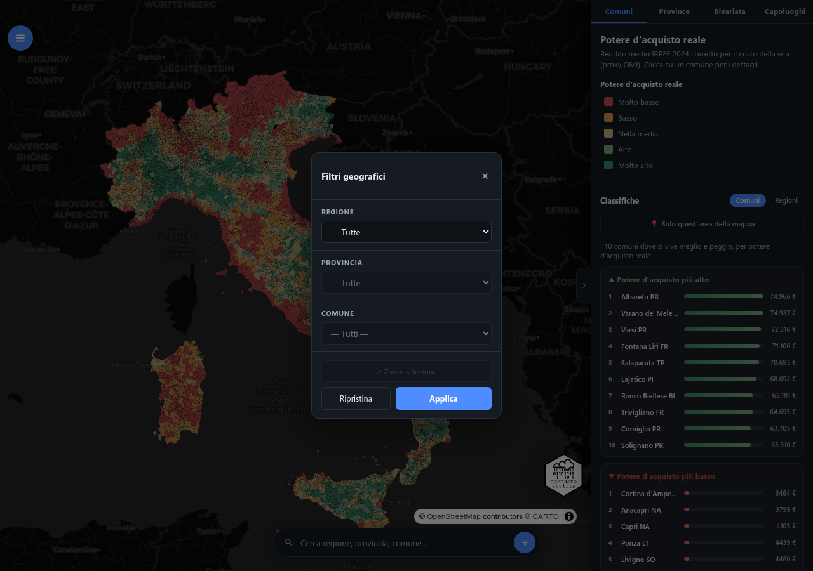
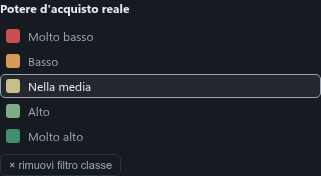
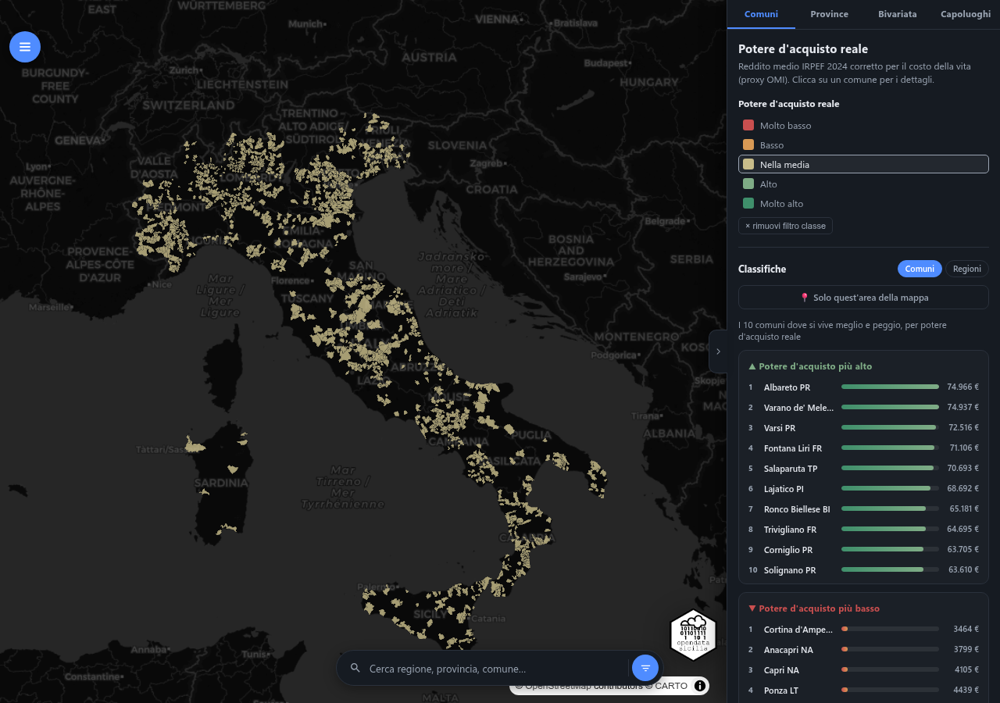

Reddito medio IRPEF 2024 corretto per il costo della vita (proxy OMI). Clicca su un comune per i dettagli.
Reddito medio provinciale corretto per il NIC Istat ufficiale, dove rilevato. Clicca su una provincia per i dettagli.
Incrocio fra reddito medio e costo della vita stimato (terzili): mostra dove le due variabili si compensano e dove no. Clicca su un comune per i dettagli.
Le 9 classi dell'incrocio reddito × costo vita. Clicca su una classe per vedere i comuni con potere d'acquisto più alto in quella classe.
Solo comuni con almeno 1.000 contribuenti, per evitare medie statisticamente rumorose sui centri molto piccoli.
Tutti i 107 comuni capoluogo di provincia, ordinati per potere d'acquisto reale (proxy OMI). Clicca su una riga per aprirla nella vista Comuni.
Come è calcolato il potere d'acquisto reale mostrato in mappa
La mappa mostra ogni comune (o provincia) colorato secondo il potere d'acquisto reale. Trascina per spostarti, rotellina o pinch per zoomare, clicca su un'area per aprire il popup coi dettagli (reddito, costo vita, fonte del dato).

Il pulsante Classifiche del menu apre il pannello a destra con le posizioni migliori e peggiori per potere d'acquisto (o costo della vita), sia per comuni sia per regioni. In alto è disponibile una barra di ricerca per trovare subito un comune o una provincia.
Attiva 📍 Solo quest'area della mappa per limitare la classifica a ciò che è visibile nella mappa in quel momento: sposta o zooma la mappa e la classifica si ricalcola da sola. Clicca su una riga della classifica per aprirla e zoomarla direttamente sulla mappa.

In basso trovi la barra di ricerca: digita il nome di una regione, provincia o comune per saltarci direttamente sopra. L'icona a imbuto apre i filtri a cascata (Regione → Provincia → Comune): scegli una regione per restringere l'elenco delle province, poi una provincia per restringere i comuni, e usa ↗ Zoom selezione per inquadrare l'area scelta sulla mappa. Le stesse selezioni valgono sia per la vista Comuni sia per la vista Province.

Nel pannello a destra, sotto ogni vista, la legenda a colori (es. "Molto basso… Molto alto") non è solo esplicativa: clicca su una voce per mostrare in mappa solo i comuni (o province) di quella classe, oscurando gli altri. Clicca di nuovo la stessa voce, oppure il link × rimuovi filtro classe che appare, per tornare a vedere tutti i valori.


potere_acquisto_reale = reddito_medio × [costo_vita_italia_media / costo_vita_stimato]
Il reddito medio è corretto al ribasso dove il costo della vita è sopra la media nazionale, e al rialzo dove è sotto — così un reddito nominale alto in una zona molto cara può risultare in un potere d'acquisto reale inferiore a un reddito più basso in una zona economica.
Il NIC Istat (indice prezzi al consumo) misura la variazione dei prezzi nel tempo in ciascuna città rispetto al proprio anno base — non il livello assoluto del costo della vita, quindi non è confrontabile direttamente fra città diverse: nei capoluoghi varia solo tra 102,3 e 104,7 (spread 2,4 punti), un intervallo troppo stretto per spiegare differenze reali di costo della vita. Per questo la mappa offre due viste, coerenti coi rispettivi dati:
| Vista | Costo della vita | Natura del dato |
|---|---|---|
| Comuni | Valore immobiliare medio OMI, come differenziale rispetto alla media nazionale | Stima (proxy), ma con variazione geografica reale (225–10.767 €/mq) |
| Province | NIC Istat ufficiale, dove rilevato | Dato diretto, nessuna stima — ma correzione minima per il motivo sopra |
| Bivariata | Stessa stima OMI della vista Comuni | Mostra reddito e costo vita come due terzili incrociati, invece di comprimerli nell'indice unico |
Reddito medio e costo della vita stimato (OMI) sono divisi ciascuno in tre terzili (basso/medio/alto su tutti i 7.890 comuni) e incrociati in una griglia 3×3: 9 colori invece dei 5 dell'indice unico. Utile per distinguere comuni dove le due variabili si compensano (reddito alto e costo alto, o reddito basso e costo basso — entrambi vicini alla media nel potere d'acquisto) da quelli dove non si compensano (reddito basso ma costo alto, o viceversa — i casi più interessanti, invisibili nell'indice unico).
Si usa il valore OMI medio (€/m², Agenzia delle Entrate, abitazioni civili stato normale) del comune, rapportato alla media nazionale OMI. Dove OMI manca o è nullo (es. mercato immobiliare fermo in aree post-sisma) si usa la media provinciale, poi quella nazionale.
Reddito medio provinciale (aggregato pesato sui contribuenti dei comuni della provincia) corretto per il NIC ufficiale del capoluogo, disponibile solo per le 77 province con rilevazione diretta. Le altre 30 restano grigie ("nessuna rilevazione NIC") invece di ricevere una stima: 27 perché Istat non rileva il NIC nel capoluogo, 2 (Savona, Taranto) perché il dato è assente in modo strutturale in tutti i mesi disponibili (gen–lug 2026), 1 (Olbia-Tempio) perché la provincia rilevata da Istat è stata abolita nel 2016.
| Fonte | Dato | Copertura |
|---|---|---|
| MEF – Dip. Finanze | Reddito medio IRPEF 2024 | 7.897 comuni |
| Istat | NIC prezzi al consumo, luglio 2026 (base 2025=100) | 77 province + dato nazionale |
| Agenzia delle Entrate – OMI | Valore immobiliare medio, 2° sem. 2025 | 7.511 comuni |
| Istat | Confini comunali e provinciali | 7.904 comuni, 107 province (1/1/2022) |
La fonte usata per ogni area è indicata nel popup al click.
Dati derivati distribuiti con licenza CC BY 4.0.
Web app progettata e sviluppata da @gbvitrano in collaborazione con Claude AI (Anthropic), che ha affiancato le scelte architetturali, l'ottimizzazione del codice e lo sviluppo delle funzionalità di visualizzazione geospaziale.